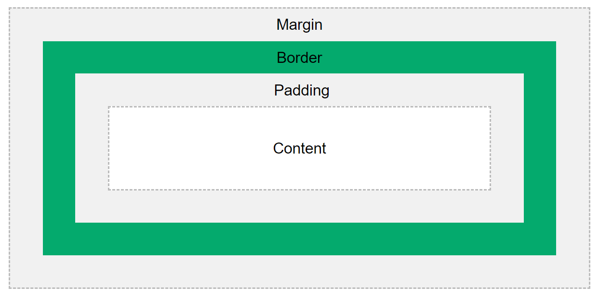

The CSS Box Model
Actually in CSS we have Box Model mechanism for every HTML element. And this is containing the following points:
- Content - The content of the box, where text and images appear
- Padding - Clears an area around the content. The padding is transparent
- Border - A border that goes around the padding and content
- Margin - Clears an area outside the border. The margin is
transparent
